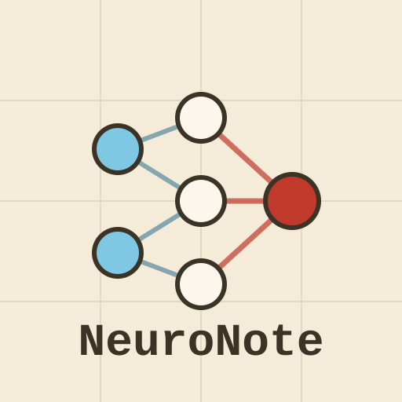
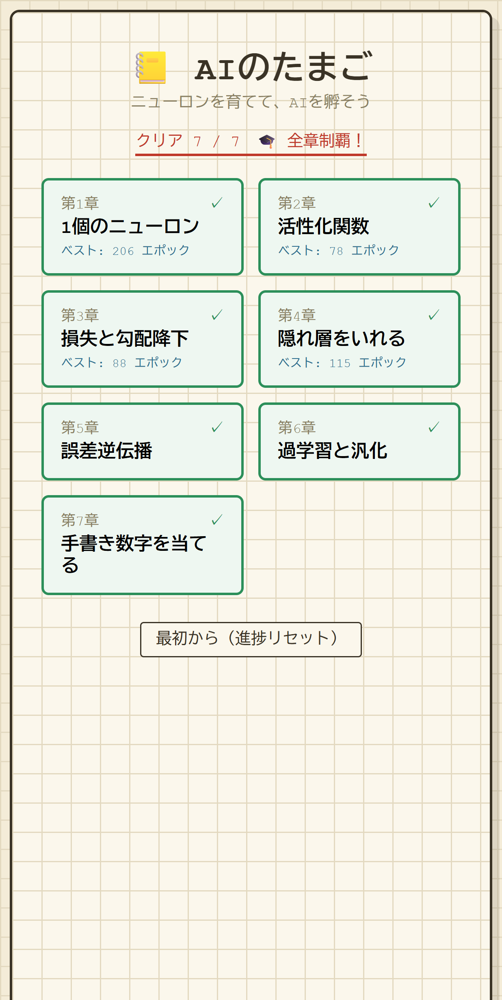
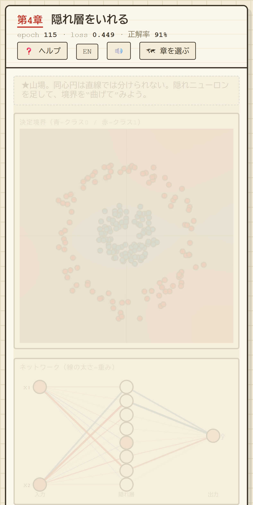
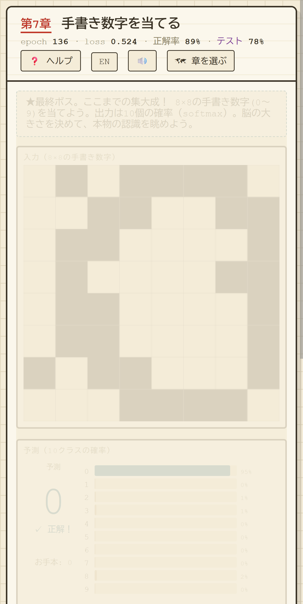
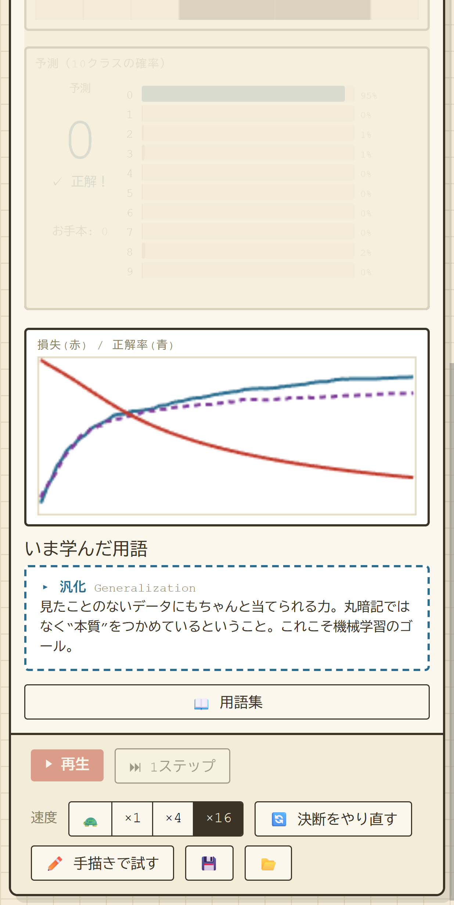

ニューロンを育てて、AIを孵そう。
WebPWAオフライン対応
飾りの演出ではありません。本物のニューラルネットが、あなたの目の前で学習します。 ニューロン1個から始めて、活性化関数・損失・勾配降下・隠れ層・誤差逆伝播と一歩ずつ進み、 最後は8×8の手書き数字を当てるところまで。毎章の決断はたったひとつ。眺めているうちに、用語まで自然と身につきます。
誤差逆伝播も勾配降下もちゃんと実装（勾配は数値微分で検証済み）。重みが更新され、決定境界が動く様子をそのまま眺められます。
全7章。ニューロン1個 → 活性化関数 → 損失と勾配降下 → 隠れ層 → 誤差逆伝播 → 過学習と汎化 → 8×8手書き数字の認識。少しずつ“本物”へ。
学習率は？ 隠れ層は何個？——選ぶのは毎章ひとつだけ。収束・発散・過学習をその場で観察して、頭ではなく手で覚えます。
損失・勾配降下・活性化・逆伝播・過学習・汎化…。専門用語はその場で用語集カードで確認。眺めるうちに言葉が腑に落ちる。
アカウント不要。進捗も育てた“脳”も端末内に保存。Web版は完全オフライン・広告なし。Androidアプリ版のみ、控えめなバナー広告（AdMob）と品質改善のための解析（Firebase）を利用します。
二言語をいつでも切り替え。方眼紙のような落ち着いたレトロ教科書調で、長く眺めても疲れない。PWAでホーム画面にも追加できます。




Android アプリ版を準備中です。公開前の先行テスター参加をご希望の方は ymatsuza.tech@gmail.com までご連絡ください。
学習の進捗・設定・保存した“脳”はあなたの端末内（localStorage）に保存され、サーバーへ送信されません。アカウント不要。 Web／PWA版は完全オフライン・広告なしで何も収集しません。Androidアプリ版のみ、バナー広告（AdMob）と品質改善のための解析・クラッシュレポート（Google Firebase）を利用します。 詳しくはプライバシーポリシーをご覧ください。
Hatch and grow a real neural network.
WebPWAOffline
No fake animations — a real neural network learns right in front of you. Start from a single neuron and move step by step through activations, loss, gradient descent, hidden layers, and backpropagation, all the way to reading 8×8 handwritten digits. One decision per chapter — and the terminology sinks in as you watch.
Real backpropagation and gradient descent (the math is numerically gradient-checked). Watch the weights update and the decision boundary move, for real.
Seven chapters: one neuron → activation → loss & gradient descent → hidden layers → backprop → overfitting & generalization → 8×8 handwritten-digit recognition.
What learning rate? How many hidden neurons? Each chapter asks for exactly one choice — then you watch it converge, diverge, or overfit and learn it by hand.
Loss, gradient descent, activation, backprop, overfitting, generalization… Check any term on the spot with glossary cards. The words click as you watch.
No account. Progress and the “brain” you grew stay on your device. The web version is fully offline and ad-free; the Android app shows a small banner ad (AdMob) and uses analytics/crash reporting (Firebase) to improve quality.
Switch languages anytime. A calm, graph-paper retro-textbook look that’s easy on the eyes. Install it to your home screen as a PWA.
No download. Play instantly on phone or desktop. It’s a PWA, so you can add it to your home screen and play offline.
The Android app is in preparation. To request early tester access before launch, email ymatsuza.tech@gmail.com.
AI Egg is a free, indie-built app. Sponsorships are greatly appreciated and help keep it going.
Your progress, settings, and the saved “brain” are stored on your device (localStorage) and never sent to a server. No account required. The Web/PWA version is fully offline and ad-free; only the Android app shows a banner ad (AdMob) and uses Google Firebase (analytics & crash reporting) to improve quality. See the privacy policy for details.